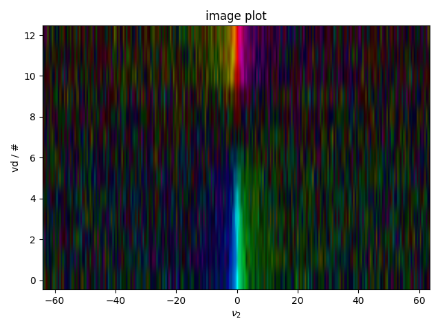

Note
Go to the end to download the full example code
Plotting Routines¶
A simple demonstration of a multi-line vs. image plot with domain coloring, nested inside a figure list.
We specifically test a safety feature that doesn’t allow image plots to have unevenly spaced axes, and show how to deal with this.
We also show how the equivalent of the color limits can be chosen by setting the scaling of the image – notice how data that exceeds the “scaling” parameter is masked out as white here.

- 

1: 1D data |||(None, None)
2: image plot |||(None, None)
3: different scales |||(None, 'scan #')
from pylab import *
from pyspecdata import *
rcParams['image.aspect'] = 'auto' # needed for sphinx gallery
# sphinx_gallery_thumbnail_number = 3
# let's make some fake inversion recovery data
vd = nddata(r_[0,0.05,0.1,0.15,0.2,0.3,0.4,0.6,0.8,1.0,2.0,3.0,5.0],'vd')
signal_amp = 1-2*exp(-vd/1.0)
t2 = nddata(r_[0:2:256j],'t2')
signal_amp *= exp(-t2/0.1)
signal_amp.add_noise(0.1)
signal_amp.set_units('s')
signal_amp.ft('t2', shift=True)
with figlist_var() as fl:
fl.next('1D data')
fl.plot(signal_amp.real) # without .real, newer versions of matplotlib raise a warning
fl.next("image plot")
fl.image(signal_amp)
fig, ax_list = subplots(1,3, figsize=(20,5))
# Finally demonstrate how we can control the scale of different images
# relative to each other.
max_data = abs(signal_amp.data).max()
fl.next("different scales",fig=fig)
for j,adjustment in enumerate([2,1,0.5]):
fl.image(signal_amp.C.setaxis('vd','#').set_units('vd','scan #'),
scaling=max_data*adjustment,
ax=ax_list[j])
ax_list[j].set_title("adjust by %0.1f"%adjustment)
Total running time of the script: (0 minutes 1.700 seconds)